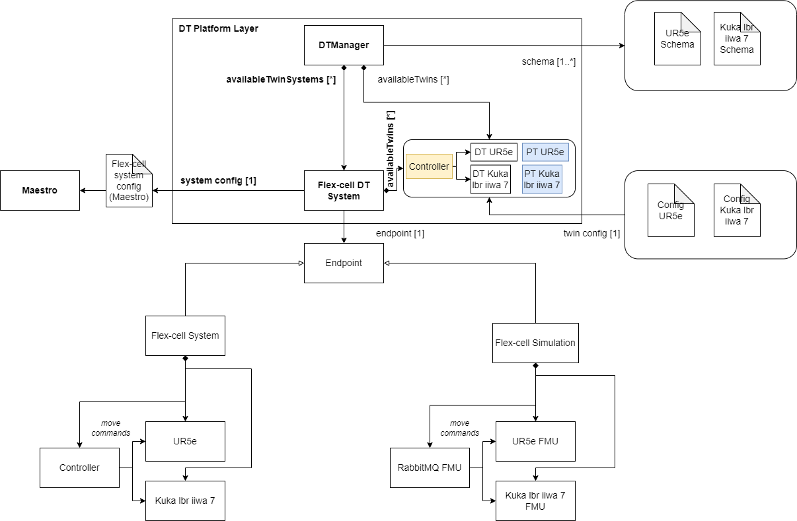
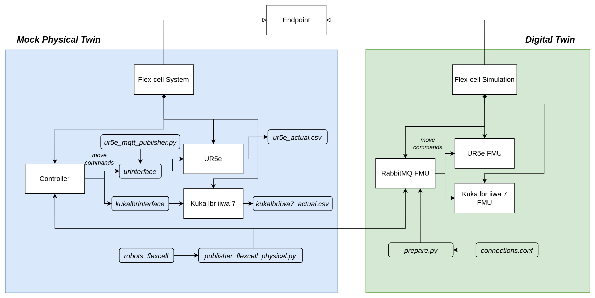

Flex Cell Digital Twin with Two Industrial Robots
Overview
The flex-cell Digital Twin is a case study with two industrial robotic arms, a UR5e and a Kuka LBR iiwa 7, working in a cooperative setting on a manufacturing cell.

The case study focuses on the robot positioning in the discrete cartesian space of the flex-cell working space. Therefore, it is possible to send (X,Y,Z) commands to both robots, which refer to the target hole and height they want should move to.
The flex-cell case study is managed using the TwinManager
(formerly DT Manager), which is packed as a jar library in the tools,
and run from a java main file.
The TwinManager uses Maestro as a slave for co-simulation,
so it generates the output of the co-simulation and can interact with
the real robots at the same time (with the proper configuration and setup).
The mainfile can be changed according to the application scope, i.e.,
the /workspace/examples/tools/flex-cell/FlexCellDTaaS.java can be
manipulated to get a different result.
The /workspace/examples/models/flex-cell/ folder contains
the .fmu files for the kinematic models of the robotic arms,
the .urdf files for visualization (including the grippers), and
the .aasx files for the schema representation with
Asset Administration Shell.
The case study also uses RabbitMQFMU to inject values into the co-simulation,
therefore, there is the rabbitmqfmu in the models folder as well.
Right now, RabbitMQFMU is only used for injecting values into
the co-simulation, but not the other way around.
The TwinManager is in charge of reading the values from
the co-simulation output and the current state of the physical twins.
Example Structure
The example structure represents the components of the flex-cell
DT implementation using the TwinManager architecture.
The TwinManager orchestrates the flex-cell DT via the Flex-cell DT System, which is composed of 2 smaller Digital Twins, namely, the DT UR5e and the DT Kuka lbr iiwa 7. The TwinManager also provides the interface for the Physical Twins, namely, PT UR5e and PT Kuka lbr iiwa 7. Each Physical Twin and Digital Twin System has a particular endpoint (with a different specialization), which is initialized from configuration files and data model (twin schema).
The current endpoints used in this implementation are:
| Digital or Physical Twin | Endpoint |
|---|---|
| Flex-cell DT System | MaestroEndpoint |
| DT UR5e | FMIEndpoint |
| DT Kuka lbr iiwa 7 | FMIEndpoint |
| PT UR5e | MQTTEndpoint and RabbitMQEndpoint |
| PT Kuka lbr iiwa 7 | MQTTEndpoint and RabbitMQEndpoint |
The Flex-cell DT System uses another configuration to be integrated with the Maestro co-simulation engine.
In the lower part, the Flex-cell System represents the composed physical twin, including the two robotic arms and controller and the Flex-cell Simulation is the mock-up representation for the real system, which is implemented by FMU blocks and their connections.


Digital Twin Configuration
This example uses seven models, five tools, six data files, two functions, and one script. The specific assets used are:
| Asset Type | Names of Assets | Visibility | Reuse in Other Examples |
|---|---|---|---|
| Model | kukalbriiwa_model.fmu | Private | No |
| kuka_irw_gripper_rg6.urdf | Private | No | |
| kuka.aasx | Private | No | |
| ur5e_model.fmu | Private | No | |
| ur5e_gripper_2fg7.urdf | Private | No | |
| ur5e.aasx | Private | No | |
| rmq-vhost.fmu | Private | Yes | |
| Tool | maestro-2.3.0-jar-with-dependencies.jar | Common | Yes |
| TwinManagerFramework-0.0.2.jar | Private | Yes | |
| urinterface (installed with pip) | Private | No | |
| kukalbrinterface | Private | No | |
| robots_flexcell | Private | No | |
| FlexCellDTaaS.java (main script) | Private | No | |
| Data | publisher-flexcell-physical.py | Private | No |
| ur5e_mqtt_publisher.py | Private | No | |
| connections.conf | Private | No | |
| outputs.csv | Private | No | |
| kukalbriiwa7_actual.csv | Private | No | |
| ur5e_actual.csv | Private | No | |
| Function | plots.py | Private | No |
| prepare.py | Private | No |
Lifecycle Phases
The lifecycles that are covered include:
- Installation of dependencies in the create phase.
- Preparing the credentials for connections in the prepare phase.
- Execution of the experiment in the execution phase.
- Saving experiments in the save phase.
- Plotting the results of the co-simulation and the real data coming from the robots in the analyze phase.
- Terminating the background processes and cleaning up the outputs in the termination phase.
| Lifecycle Phase | Completed Tasks |
|---|---|
| Create | Installs Java Development Kit for Maestro tool, Compiles source code of TwinManager to create a usable jar package (used as tool) |
| Prepare | Takes the RabbitMQ and MQTT credentials in connections.conf file and configures different assets of DT. |
| Execute | The TwinManager executes the flex-cell DT and produces output in data/flex-cell/output directory |
| Save | Save the experimental results |
| Analyze | Uses plotting functions to generate plots of co-simulation results |
| Terminate | Terminating the background processes |
| Clean | Cleans up the output data |
Run the example
To run the example, change your present directory.
If required, change the execute permission of lifecycle scripts you need to execute, for example:
This example requires Java 11. The create script installs Java 11; however if you have already installed other Java versions, your default java might be pointing to another version. You can check and modify the default version using the following commands.
Now, run the following scripts:
Create
Installs Open Java Development Kit 11 and a python virtual environment with pip dependencies.
Also builds the TwinManager tool (TwinManagerFramework-0.0.2.jar)
from source code.
Prepare
Configure different assets of DT with these credentials.
The functions/flex-cell/prepare.py script is used for this purpose.
The only thing needed to set up the connection is to update the file
/workspace/examples/data/flex-cell/input/connections.conf with
the connection parameters for MQTT and RabbitMQ and then execute
the prepare script.
The following files are updated with the configuration information:
/workspace/examples/digital_twins/flex-cell/kuka_actual.conf/workspace/examples/digital_twins/flex-cell/ur5e_actual.conf/workspace/examples/data/flex-cell/input/publisher-flexcell-physical.pymodelDescription.xmlfor the RabbitMQFMU require special credentials to connect to the RabbitMQ and the MQTT brokers.
Execute
Execute the flex-cell digital twin using TwinManager. TwinManager in-turn runs
the co-simulation using Maestro. Generates the co-simulation output.csv file
at /workspace/examples/data/flex-cell/output.
The execution needs to be stopped with control + c since
the TwinManager runs the application in a non-stopping loop.
Save
Each execution of the DT is treated as a single run. The results of
one execution are saved as time-stamped co-simulation output file in
The TwinManager executes the flex-cell digital twin and produces output
in data/flex-cell/output/saved_experiments directory.
The execute and save scripts can be executed in that order any number of
times. A new file data/flex-cell/output/saved_experiments directory
with each iteration.
Analyze
There are dedicated plotting functions in functions/flex-cell/plots.py.
This script plots the co-simulation results against the recorded values
from the two robots.
Terminate
Stops the Maestro running in the background. Also stops any other jvm process started during execute phase.
Clean
Removes the output generated during execute phase.
Examining the results
Executing this Digital Twin will generate a co-simulation output,
but the results can also be monitored from updating
the /workspace/examples/tools/flex-cell/FlexCellDTaaS.java with
a specific set of getAttributeValue commands, such as shown in the code.
That main file enables the online execution and comparison on Digital Twin
and Physical Twin at the same time and at the same abstraction level.
The output is generated to the
/workspace/examples/data/flex-cell/output folder.
In case a specific experiments is to be saved, the save
lifecycle script stores the co-simulation results into
the /workspace/examples/data/flex-cell/output/saved_experiments folder.
In the default example, the co-simulation is run for 11 seconds in
steps of 0.2 seconds.
This can be modified for a longer period and different step size.
The output stored in outputs.csv contains the joint position of
both robotic arms and the current discrete (X,Y,Z) position of
the TCP of the robot.
Additional variables can be added, such as the discrete (X,Y,Z) position
of the other joints.
When connected to the real robots, the tools urinterface and
kukalbrinterface log their data at a higher sampling rate.
References
The RabbitMQ FMU github repository contains complete documentation and source code of the rmq-vhost.fmu.
More information about the TwinManager (formerly DT Manager) and the case study is available in:
- D. Lehner, S. Gil, P. H. Mikkelsen, P. G. Larsen and M. Wimmer, "An Architectural Extension for Digital Twin Platforms to Leverage Behavioral Models," 2023 IEEE 19th International Conference on Automation Science and Engineering (CASE), Auckland, New Zealand, 2023, pp. 1-8, doi: 10.1109/CASE56687.2023.10260417.
- S. Gil, P. H. Mikkelsen, D. Tola, C. Schou and P. G. Larsen, "A Modeling Approach for Composed Digital Twins in Cooperative Systems," 2023 IEEE 28th International Conference on Emerging Technologies and Factory Automation (ETFA), Sinaia, Romania, 2023, pp. 1-8, doi: 10.1109/ETFA54631.2023.10275601.
- S. Gil, C. Schou, P. H. Mikkelsen, and P. G. Larsen, “Integrating Skills into Digital Twins in Cooperative Systems,” in 2024 IEEE/SICE International Symposium on System Integration (SII), 2024, pp. 1124–1131, doi: 10.1109/SII58957.2024.10417610.